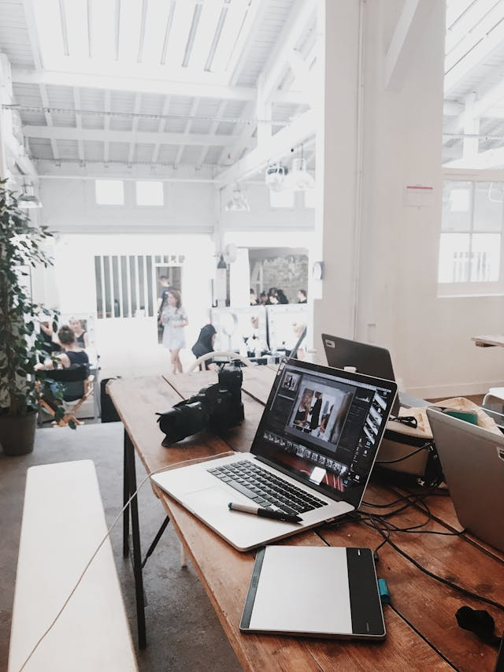
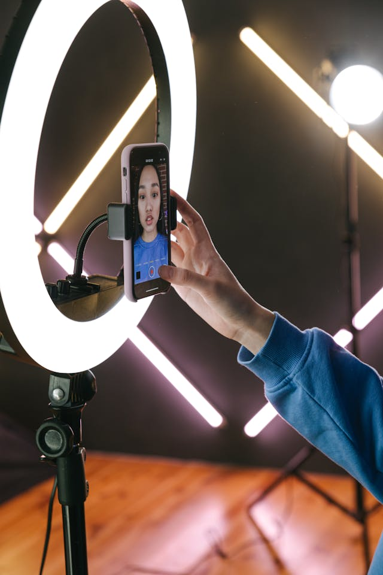

A webfejlesztés a modern digitális világ egyik alapvető eleme, amely folyamatosan fejlődik és változik az új technológiák és trendek megjelenésével. A webfejlesztés két fő területre osztható: front-end és back-end fejlesztésre. A front-end fejlesztők azok, akik a weboldal látványos és interaktív elemeit készítik el, míg a back-end fejlesztők a háttérben futó adatkezelést és logikát alakítják ki. A front-end fejlesztés során a fejlesztők HTML, CSS és JavaScript nyelveket használnak, hogy létrehozzák a weboldal felületét, ahol a felhasználók interakcióba lépnek az oldallal. A HTML (HyperText Markup Language) biztosítja a weboldal alapstruktúráját, míg a CSS (Cascading Style Sheets) lehetővé teszi az oldal stílusának és megjelenésének meghatározását. A JavaScript pedig dinamikus és interaktív elemek hozzáadására szolgál, például űrlapok validációja, animációk és egyéb felhasználói élményt javító funkciók. A back-end fejlesztés magába foglalja a szerveroldali programozást, adatbázis-kezelést és a weboldal háttérrendszereinek kialakítását. A fejlesztők különböző programozási nyelveket használnak, mint például PHP, Python, Ruby vagy Java, hogy megírják a weboldal logikáját és adatkezelési folyamatait. Az adatbázisok, mint például MySQL, PostgreSQL vagy MongoDB, lehetővé teszik az adatok hatékony tárolását és kezelését, míg a szerveroldali keretrendszerek, mint a Node.jsvagy a Django, segítenek az alkalmazások gyors fejlesztésében és futtatásában. A webfejlesztés nem csupán a technikai ismeretekről szól, hanem a felhasználói élmény (UX) és a felhasználói felület (UI) tervezéséről is. A jó weboldal nemcsak esztétikus, hanem könnyen használható és hozzáférhető is. A reszponzív webdesign biztosítja, hogy a weboldal minden eszközön, legyen az számítógép, tablet vagy okostelefon, jól működjön és megfelelően jelenjen meg.Végül, a webfejlesztés állandó tanulást és alkalmazkodást igényel, hiszen a technológia folyamatosan változik és fejlődik. Az új eszközök, keretrendszerek és technikák megismerése és alkalmazása elengedhetetlen a sikeres webfejlesztők számára, akik lépést akarnak tartani a piac igényeivel és elvárásaival.

A grafikai tervezés egy kreatív és dinamikus terület, amely a vizuális kommunikációra és a megjelenésre összpontosít. A grafikai tervezők különféle eszközöket és technikákat alkalmaznak, hogy vonzó és hatékony vizuális tartalmakat hozzanak létre, amelyek célja, hogy információkat közvetítsenek, érzelmeket keltsenek, és kapcsolatot teremtsenek a célközönséggel. A grafikai tervezés magában foglalja a logók, plakátok, brosúrák, weboldalak, reklámanyagok, csomagolások és egyéb vizuális elemek tervezését. A grafikai tervezés alapja a kompozíció, amely meghatározza, hogyan helyezkednek el a vizuális elemek a felületen. A kompozícióban fontos szerepet játszik az arányok, a kontraszt, az egyensúly és a ritmus. A tervezőknek figyelembe kell venniük a célközönség igényeit és elvárásait, valamint a tervezés célját és kontextusát. A színek használata szintén kulcsfontosságú a grafikai tervezésben. A színek képesek érzelmeket kelteni, hangulatot teremteni és befolyásolni a nézők észlelését. A színelmélet segít a tervezőknek abban, hogy megértsék, hogyan működnek együtt a különböző színek, és hogyan alkalmazhatják őket a kívánt hatás eléréséhez. A tipográfia a grafikai tervezés másik alapvető eleme, amely a szöveg formázására és megjelenítésére összpontosít. A megfelelő betűtípusok kiválasztása és a szöveg elrendezése segíthet a tervezés olvashatóságának és esztétikájának javításában. A digitális technológia fejlődésével a grafikai tervezés is új lehetőségeket kínál. A tervezők számos szoftvert és eszközt használhatnak, mint például az Adobe Creative Suite, amely magában foglalja a Photoshopot, az Illustrator-t és az InDesign-t. Ezek az eszközök lehetővé teszik a tervezők számára, hogy részletes és precíz terveket készítsenek, valamint könnyedén módosítsák és optimalizálják a munkáikat. A grafikai tervezés nem csupán a művészi kifejezésről szól, hanem a problémamegoldásról és az információközlésről is. A tervezőknek képesnek kell lenniük megérteni a megbízóik igényeit és céljait, és ezeket vizuális formában közvetíteni. A jó grafikai tervezés segíthet egy márka identitásának erősítésében, a marketingkampányok hatékonyságának növelésében, és a felhasználói élmény javításában. Végül, a grafikai tervezés folyamatos fejlődést és tanulást igényel. A tervezőknek lépést kell tartaniuk az új trendekkel, technológiákkal és eszközökkel, hogy versenyképesek maradjanak és magas színvonalú munkákat hozzanak létre. Ez a kreatív és változatos terület lehetőséget kínál a tervezők számára, hogy kifejezzék egyedi látásmódjukat és tehetségüket, miközben értékes és hatékony vizuális megoldásokat nyújtanak a különböző iparágak és ügyfelek számára.

A tartalomkészítés a digitális marketing egyik kulcsfontosságú eleme, amely magában foglalja a különböző típusú és formátumú tartalmak létrehozását, szerkesztését és közzétételét. Célja, hogy értékes és releváns információkat nyújtson a célközönség számára, növelje az elköteleződést, és támogassa a márkát vagy vállalkozást. A tartalomkészítés különféle formái közé tartoznak a blogbejegyzések, cikkek, videók, infografikák, közösségi média posztok, e-könyvek, podcastok és egyéb vizuális és írott tartalmak. A tartalomkészítési folyamat első lépése a stratégia kidolgozása, amely meghatározza a célokat, a célközönséget, és a tartalom típusát és stílusát. Fontos, hogy a tartalom összhangban legyen a márka üzenetével és értékeivel, és kielégítse a célközönség igényeit és érdeklődési körét. A tartalomkutatás és a konkurenciaelemzés segíthet meghatározni, milyen témák és formátumok a legnépszerűbbek és legrelevánsabbak az adott iparágban. A tartalomkészítés során kreatív és technikai készségekre egyaránt szükség van. Az írott tartalmak esetében a szövegíróknak képesnek kell lenniük érthetően és meggyőzően kommunikálni, valamint figyelemfelkeltő és informatív címeket és bevezetőket készíteni. A vizuális tartalmak, például videók és infografikák esetében fontos a grafikai tervezési készségek és a megfelelő szoftverek ismerete. A tartalom optimalizálása szintén elengedhetetlen a sikeres tartalomkészítéshez. Az SEO (Search Engine Optimization) technikák alkalmazása segíthet a tartalomnak jobb helyezést elérni a keresőmotorok találatai között, így több látogatót vonzhat az oldalra. Az optimalizálás magában foglalja a megfelelő kulcsszavak használatát, a meta leírások és címkék létrehozását, valamint a tartalom struktúrájának és formázásának javítását. A tartalomkészítés utolsó lépése a terjesztés és a promóció. A tartalomnak el kell jutnia a célközönséghez, hogy elérje céljait. A közösségi média platformok, e-mail marketing kampányok, és más digitális csatornák használata segíthet növelni a tartalom elérhetőségét és láthatóságát. Fontos figyelemmel kísérni a tartalom teljesítményét, és szükség esetén módosításokat végezni a stratégia javítása érdekében. A tartalomkészítés tehát összetett és folyamatosan változó folyamat, amely kreativitást, technikai ismereteket, és stratégiai gondolkodást igényel. A jó tartalom értéket nyújt a célközönség számára, és hozzájárul a márka vagy vállalkozás sikeréhez és növekedéséhez. A tartalomkészítőknek lépést kell tartaniuk az új trendekkel és technológiákkal, hogy versenyképesek maradjanak, és mindig friss és releváns tartalmat nyújtsanak.